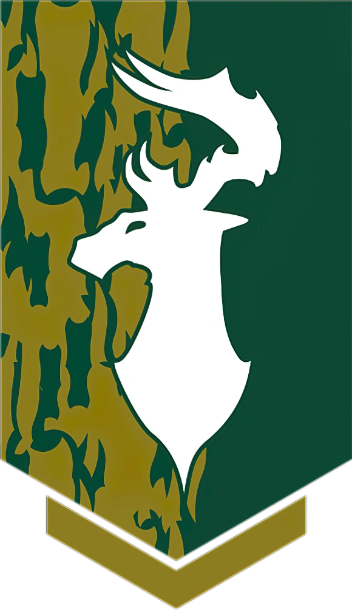
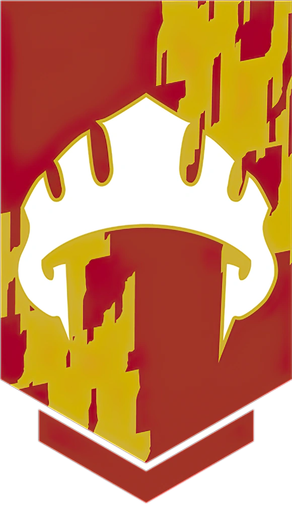
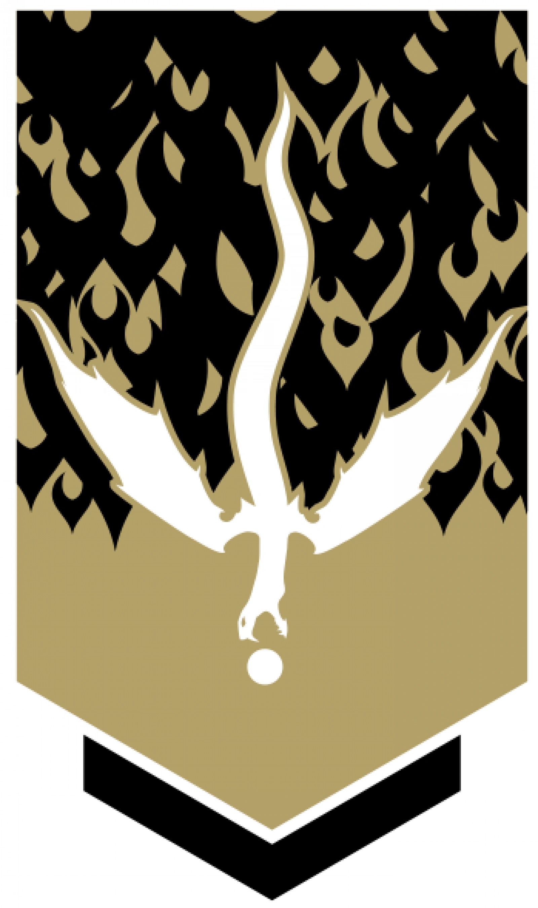

Council Factions
Below are the factions meeting with you and Bruenor about countering the threat in the Underdark.
The Harpers
Members of this clandestine network of spellcasters and spies pride themselves on being incorruptible defenders of the greater good and champions of the opressed. Harper agents are trained to act alone and on their own resources. Present leader is Lord Zelraun Roaringhorn, proud wizard human male.
Order of the Gauntlet
The order of the gauntlet is a dedicated, tightly knit group of holy-minded crusaders driven by a finely hone sense of justice and honor. Friendship and camaraderie are important to members of the order, and they sjared a trust normally reserved for siblings. They seek to uphold justice as best they can, and to continually test their mettle against the forces of evil. Present leader is Sir Lanniver Strayl, veteran crusader of Tyr.
Emerald Enclave
The order of the gauntlet is a dedicated, tightly knit group of holy-minded crusaders driven by a finely hone sense of justice and honor. Friendship and camaraderie are important to members of the order, and they sjared a trust normally reserved for siblings. They seek to uphold justice as best they can, and to continually test their mettle against the forces of evil. Present leader is Morista Malkin, stern dwarf female druid.
Lord's Alliance
The order of the gauntlet is a dedicated, tightly knit group of holy-minded crusaders driven by a finely hone sense of justice and honor. Friendship and camaraderie are important to members of the order, and they sjared a trust normally reserved for siblings. They seek to uphold justice as best they can, and to continually test their mettle against the forces of evil. Present leader is Lord Eravien Haund, charming sly half-elf male.
Zhentarim
The order of the gauntlet is a dedicated, tightly knit group of holy-minded crusaders driven by a finely hone sense of justice and honor. Friendship and camaraderie are important to members of the order, and they sjared a trust normally reserved for siblings. They seek to uphold justice as best they can, and to continually test their mettle against the forces of evil. Present leader is Davra Jassur, graceful female human.